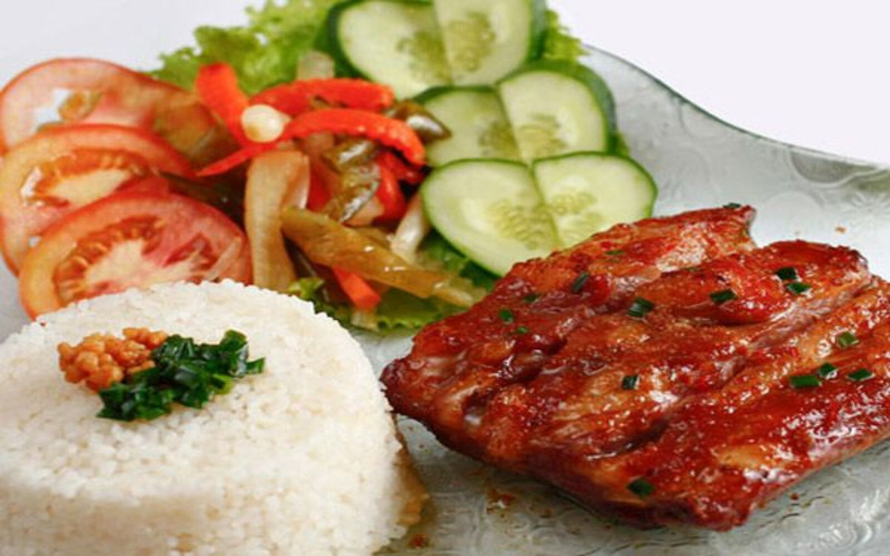

Cơm tấm

Cơm tấm là một món ăn nổi tiếng và phổ biến ở miền Nam, đặc biệt là Sài Gòn. Món ăn này được chế biến từ các nguyên liệu rất đơn giản nhưng làm nên hương vị rất riêng, khó lẫn với bất kỳ món cơm nào khác.
Quay lại Thực đơn